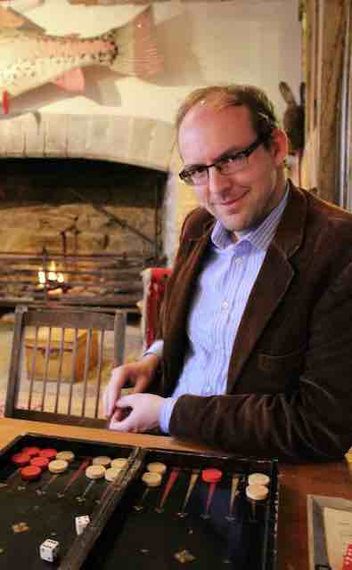

The Homepage of Jonathan Pritchard
Jonathan PritchardSenior Lecturer in Astrostatistics, Imperial College LondonPhD (Physics) (2007), California Institute of Technology Curriculum Vitae: pdf |
 |
|
Campus Information: Tel: - Email: j.pritchard aT imperial.ac.uk |
Mailing Address: |
Search publications: SPIRES, ADS, astro-ph, or Google Scholar
Teaching information: Cosmology (Winter term 2013)
I am a Senior Lecturer in Astrostatistics in the Astrophysics group at Imperial College London, where I moved in October 2011. Previously, I was a Hubble Fellow at the Harvard-Smithsonian Center for Astrophysics. My research deals with understanding the astrophysics of the 21 cm line of hydrogen with a view to making predictions for the upcoming generation of low-frequency radio telescopes. These observations have enormous potential to tell us about the first stars and galaxies and the evolution of structures in the early Universe.
Formally, I was a graduate student in the Theoretical Astrophysics group at Caltech, where I completed my PhD in physics/cosmology with the help of my advisor Marc Kamionkowski. While there, I also worked extensively with Steve Furlanetto on ways the 21 cm transition of hydrogen can be used to probe the cosmic dark ages and reionization. Before that, I completed my undergraduate at Pembroke College, Cambridge. I'm a cosmologist seeking to extend our understanding of the early history of the universe.